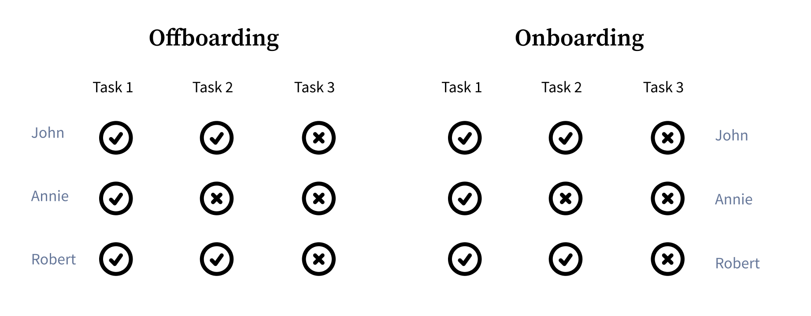
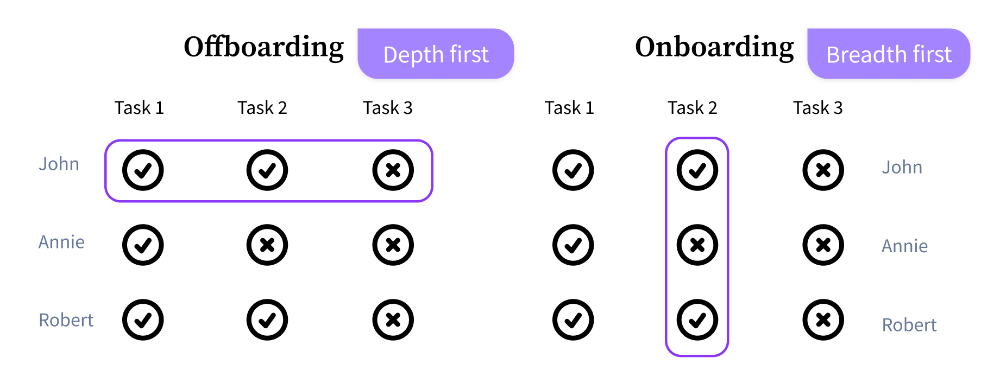
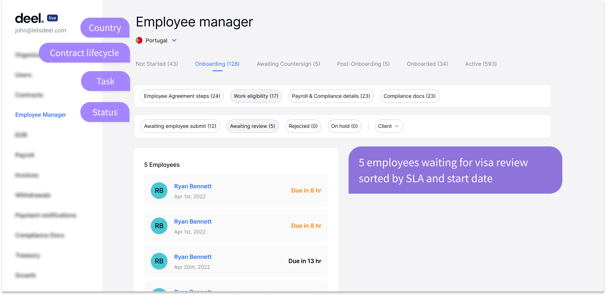
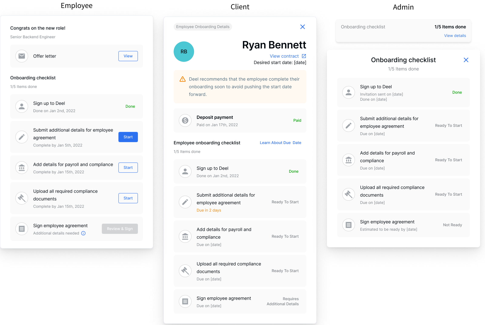

Employee
Manager
Rebuilding the operational backbone of EOR onboarding — from a cottage workflow to a global onboarding platform
Scaling onboarding beyond spreadsheets
When I joined Deel, EOR onboarding was already working — but it was powered by spreadsheets and manual operations. That worked for hundreds of employees. It could not scale to thousands across countries.
Employee Manager replaced that operational backbone with a system designed to support global scale.
(by 2021 Q4)
MVP shipped in Q1 2022
(2025 Q2)
When the business runs on spreadsheets
scale hits a ceiling
Onboarding worked — but only because Ops manually held everything together. The spreadsheet became the system of record, but only Ops could interpret it.
As the business expanded across countries, each onboarding introduced more compliance rules, more coordination, and more manual work.
The system wasn’t just slow — it was structurally unsustainable.
Removing the bottleneck
from both ends
Ops clearly needed better tooling than spreadsheet. But fixing Ops alone wouldn’t solve it.
The real question was:
how do we increase total onboarding capacity — not just Ops throughput?
If onboarding gets stuck for 20 minutes at every step, no amount of Ops efficiency will save you.
So I redesigned the employee onboarding experience, the client tracking experience, and the Ops admin together.
3 surfaces. 8 weeks. 1 system.
Why not reuse Offboarding Manager
Before Employee Manager, I had designed Offboarding Manager — an internal tool for Ops that worked well and was already in production. It would have been the fastest path to reuse it.
And at first glance, it made sense — onboarding and offboarding share the same users and similar task structures.


But in practice, Ops approach them very differently.
Tasks in offboarding is sequential — You need to know how many days of annual leave John has taken
before you can calculate his severance. Ops completes one employee end to end.
Tasks in onboarding is mostly parallel — Ops wants to clear one task type across all employees, like reviewing all pending visa cases.
Depth-first vs breadth-first — means copying the same model would optimise for the wrong behaviour.
A system build around
what needs to be done
lifecycle
A system structured around actions, not people
- Status is the core operational layer, where all work is surfaced, grouped, and acted on
- Tasks and contract lifecycle define the structure behind each status, governing what needs to happen and in what order
- Country sits at the top layer, reflecting how Ops is organised and the country-specific knowledge required for onboarding

The system moves with Ops' workflow
- Ops can clear the same task across employees without re-navigation
- Work flows forward to the next step or across the same queue, no need to search, assign, or track what comes next
- Completing a task moves Ops directly to the next step , e.g. visa approval to contract preparation
- Ops stays in the workflow instead of switching views
"Really? You can go directly to send the contract? That's awesome."
Three surfaces, one shared reality
- Employee, client, and Deel admin are built on the same underlying task model
- Each surface exposes the same system from a different perspective
- Everyone is looking at the same state of progress — not reconciling between tools

Scaling onboarding beyond
Ops capacity
"EM helped prevent and improve breaches by 50% — we are now more compliant with SLA and prioritisation of tasks."
— Ops Director
What held
at scale
"I love Employee Manager. I wish we had something like that in my product line."
That was the strongest signal — not at launch, but long after.
The system I designed in 2022 still powers the product at 3,000+ onboardings per month, without structural redesign.
It became a reference point for other product lines, and reduced Ops onboarding training from multi-platform walkthroughs to simply: log in to Employee Manager.
Even as new features were added on top, the underlying structure held.